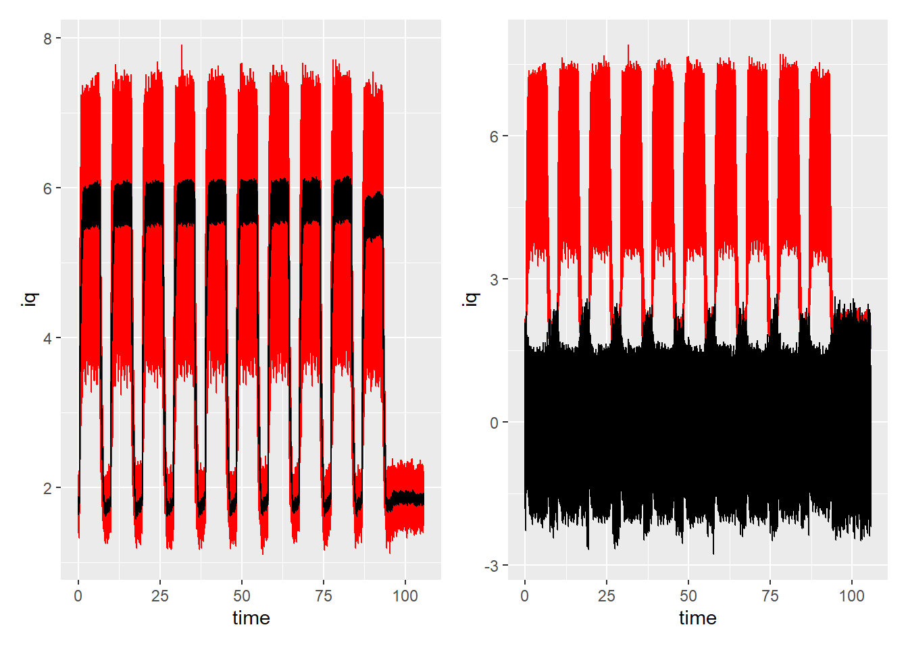
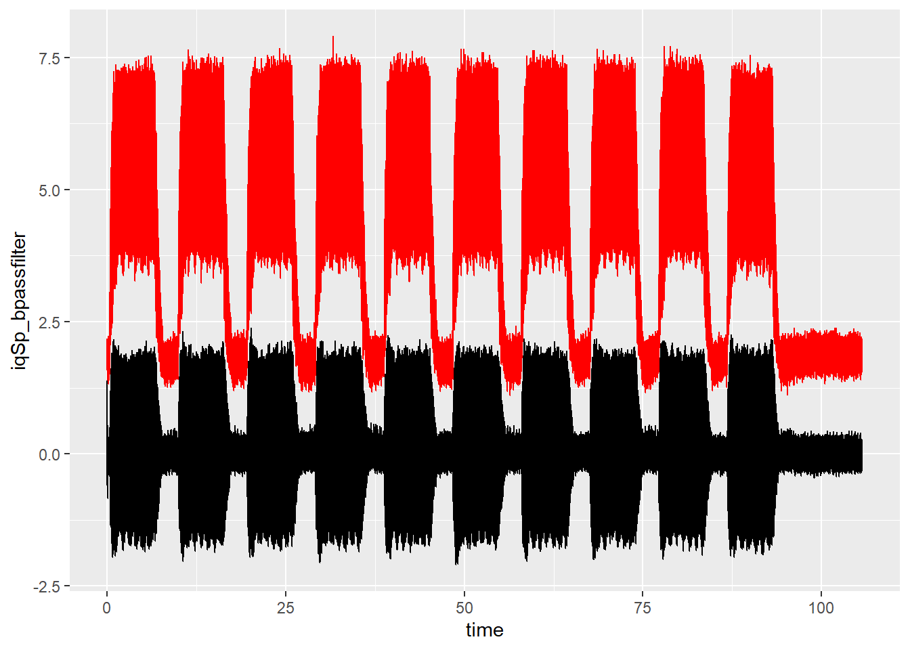
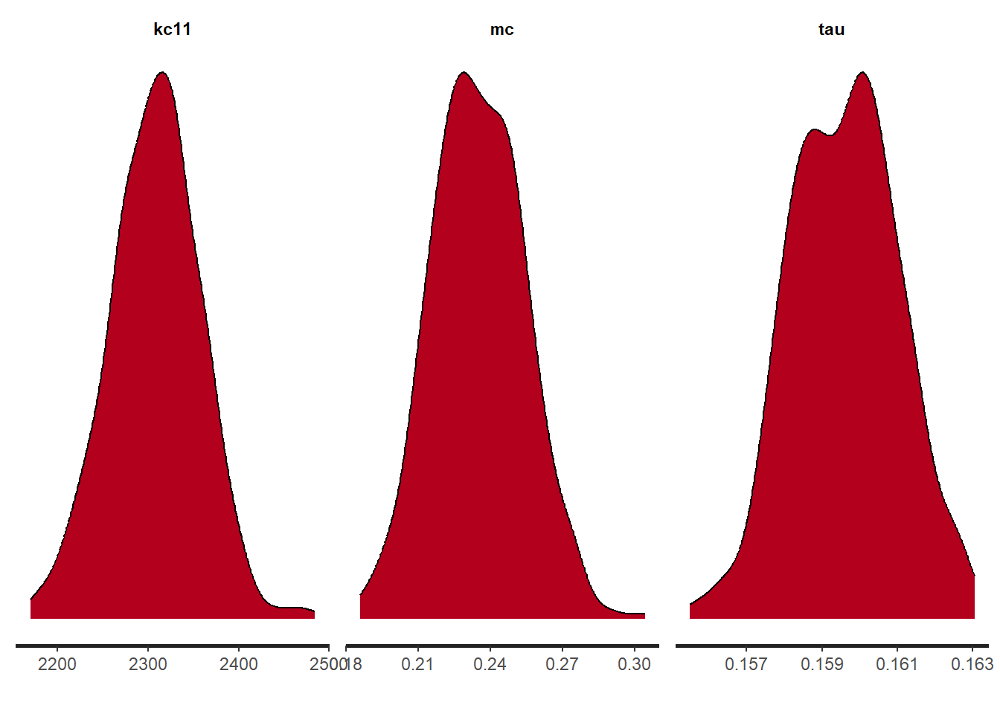

#setwd("D:/github/DataMining2024")GibbsSampler stan Cutting Tool
Necessary Library
knitr::opts_chunk$set(echo = TRUE)
library(gt)
library(ggplot2)Warning: package 'ggplot2' was built under R version 4.3.3library(MASS)
library(patchwork)
Attaching package: 'patchwork'The following object is masked from 'package:MASS':
arealibrary(R2OpenBUGS)
library(rjags)Loading required package: codaLinked to JAGS 4.3.1Loaded modules: basemod,bugslibrary(R2jags)Warning: package 'R2jags' was built under R version 4.3.3Registered S3 methods overwritten by 'R2WinBUGS':
method from
print.bugs R2OpenBUGS
plot.bugs R2OpenBUGS
as.mcmc.list.bugs R2OpenBUGS
Attaching package: 'R2jags'The following object is masked from 'package:coda':
traceplotlibrary(patchwork)
library(tidyverse)Warning: package 'tidyverse' was built under R version 4.3.3Warning: package 'readr' was built under R version 4.3.3── Attaching core tidyverse packages ──────────────────────── tidyverse 2.0.0 ──
✔ dplyr 1.1.3 ✔ readr 2.1.5
✔ forcats 1.0.0 ✔ stringr 1.5.1
✔ lubridate 1.9.3 ✔ tibble 3.2.1
✔ purrr 1.0.2 ✔ tidyr 1.3.1── Conflicts ────────────────────────────────────────── tidyverse_conflicts() ──
✖ dplyr::filter() masks stats::filter()
✖ dplyr::lag() masks stats::lag()
✖ dplyr::select() masks MASS::select()
ℹ Use the conflicted package (<http://conflicted.r-lib.org/>) to force all conflicts to become errorslibrary(cmdstanr)This is cmdstanr version 0.7.1
- CmdStanR documentation and vignettes: mc-stan.org/cmdstanr
- CmdStan path: C:/Users/TRUDOLF/Documents/.cmdstan/cmdstan-2.34.1
- CmdStan version: 2.34.1
A newer version of CmdStan is available. See ?install_cmdstan() to install it.
To disable this check set option or environment variable CMDSTANR_NO_VER_CHECK=TRUE.# filters
library(signal)Warning: package 'signal' was built under R version 4.3.3
Attaching package: 'signal'
The following object is masked from 'package:dplyr':
filter
The following objects are masked from 'package:stats':
filter, polylibrary(rstan)Warning: package 'rstan' was built under R version 4.3.3Loading required package: StanHeadersWarning: package 'StanHeaders' was built under R version 4.3.3
rstan version 2.32.6 (Stan version 2.32.2)
For execution on a local, multicore CPU with excess RAM we recommend calling
options(mc.cores = parallel::detectCores()).
To avoid recompilation of unchanged Stan programs, we recommend calling
rstan_options(auto_write = TRUE)
For within-chain threading using `reduce_sum()` or `map_rect()` Stan functions,
change `threads_per_chain` option:
rstan_options(threads_per_chain = 1)
Do not specify '-march=native' in 'LOCAL_CPPFLAGS' or a Makevars file
Attaching package: 'rstan'
The following object is masked from 'package:tidyr':
extract
The following object is masked from 'package:R2jags':
traceplot
The following object is masked from 'package:coda':
traceplot
The following object is masked from 'package:R2OpenBUGS':
monitorlibrary(parallel)Some functions
source('cut_analysis_fcn.R')Read data
# Specify the folder path
folder_path <- "..\\data\\080807_WearMillingY_50%\\Level_070\\"
# Get a list of all .csv files in the folder
csv_files <- list.files(path = folder_path, pattern = "\\.csv$", full.names = TRUE)
# Print the list of .csv files
#print(csv_files)
iqAx4_L002 <- NULL
time_L002 <- NULL
rotAx4_L002 <- NULL
toffset <- 0
nfiles <- length(csv_files)
for(fidx in 1:nfiles){
## spindle current
process_mill <- read.csv(csv_files[fidx])
iqSp <- process_mill$X..Nck..SD.nckServoDataActCurr32..u1..4.
rotAx4 <- process_mill$X..Nck..SD.nckServoDataActPos1stEnc32..u1..4.
iqAx4_L002 <- append(iqAx4_L002, iqSp)
rotAx4_L002 <- append(rotAx4_L002, rotAx4-rotAx4[1])
# time
time <- process_mill$time
time_L002 <- append(time_L002, time+toffset)
toffset <- time_L002[length(time_L002)]
}iqSp <- iqAx4_L002
time <- time_L002
rotAx4 <- rotAx4_L002
nsamples <- length(iqSp)
#velSp <- rotAx4[2:nsamples] - rotAx4[1:nsamples-1]
#time <- process_mill$time
dtime <- diff(time)
dtime <- append(dtime, 0.002)
#phi_real <-rotAx4# cumsum(velSp)*0.002
#df_phi_real <- lim22pi(phi_real)
#phi_real <- df_phi_real[[1]]
N <- length(iqSp)
raund_count = 0
km <- 1.3
Mc <- iqSp * km
Mc_real4STAN <- iqSp * km
df_plot_data_complete <- data.frame(iqSp = iqSp,
#velSp = velSp,
time = time,
dtime = dtime,
#phi = phi_real,
Mc = Mc_real4STAN)
ggplot(df_plot_data_complete) +
geom_line(aes(x = time, y = iqSp)) +
geom_line(aes(x = time, y = maf(iqSp, 12)$maf_signal, colour="current"))+
geom_line(aes(x = time, y = Mc)) +
geom_line(aes(x = time, y = maf(Mc, 12)$maf_signal, colour="torque"))
df_sdtsca_iqSp_filt = maf(iqSp, 12)
iqSp_maf = df_sdtsca_iqSp_filt$maf_signal
iqSp_mStdScOut = df_sdtsca_iqSp_filt$mStdScOut
df <- data.frame(t = time, iq = iqSp, iq_filt = iqSp_maf, iqSp_var = iqSp_mStdScOut)
g1 <- ggplot(df) +
geom_line(aes(x=time, y=iq), color="red") +
geom_line(aes(x=time, y=iq_filt))
g2 <- ggplot(df) +
geom_line(aes(x=time, y=iq), color="red") +
geom_line(aes(x=time, y=iqSp_var))
g1+g2Warning: Removed 1 row containing missing values or values outside the scale range
(`geom_line()`).
Band pass filter
# Band-pass filter with lower and upper cutoff frequencies
Ts <- time[2]-time[1]
fs <- 1/Ts
flow <- 10 # Hz
fhigh <- 150 # Hz
fband <-c(flow, fhigh) / (fs/2)
filter_order <- 4
bandpass_filter <- butter(filter_order, fband, type = "pass")
iqSp_bpassfilter <- filter(bandpass_filter, iqSp)
df_bpass <- data.frame(time, iqSp_bpassfilter, iqSp)
g1 <- ggplot(df_bpass, aes(time, iqSp_bpassfilter)) +
geom_line() +
geom_line(aes(time, iqSp), color="red")
g1Don't know how to automatically pick scale for object of type <ts>. Defaulting
to continuous.
mc <- 0.23
kc11 <- (2306-977*0)
beta_dist_mc <- beta_dist_param(mc, 0.02^2)
beta_dist_mc alpha beta
1 101.6025 340.1475beta_dist_kc <- beta_dist_param(kc11, 977^2)
beta_dist_kc alpha beta
1 -15147.05 15140.48# test the result
N <- 1000
x = seq(0, 1, length.out=N)
xnorm = seq(0, 6000, length.out=N)
m_kc <- 2306
sd_kc <- 977
beta_init_mc <- dbeta(x, beta_dist_mc$alpha, beta_dist_mc$beta)
norm_init_kc <- dnorm(xnorm, m_kc, sd_kc)
df_prior_dist <- data.frame(x = x,
xnorm = xnorm,
beta_init_mc = beta_init_mc,
norm_init_kc = norm_init_kc)
g_mc <- ggplot(df_prior_dist, aes(x=x, y=beta_init_mc, color="prior")) +
geom_line()
g_mc
g_kc <- ggplot(df_prior_dist, aes(x=xnorm, y=norm_init_kc, color="prior")) +
geom_line()
g_kc
Prepare data for STAN model
ap = 0.001 # cutting depth in m
fz = 0.00015 # feed per tooth in m
kappa = 105/180*pi # main angle of tool insert in degree
z = 3 # number of cutting edges [2, 3, 4]
rtool = 0.040/2# tool radius in m
alpha_mc = beta_dist_mc$alpha
beta_mc = beta_dist_mc$alpha
m_kc = m_kc
sd_kc = sd_kc# prep Mc
Mc_real4STAN <- na.omit(iqSp_bpassfilter)
Mc_real4STAN_min <-min( Mc_real4STAN)
Mc_real4STAN_max <-max( Mc_real4STAN)
off_Mc = (Mc_real4STAN_max - Mc_real4STAN_min)/2
idx <- which(abs(Mc_real4STAN)>Mc_real4STAN_max*.2)
Mc_real4STAN2Eval <- Mc_real4STAN[idx]
Mc_real4STAN2Eval <- (Mc_real4STAN2Eval + off_Mc)*1
phi_list <- lim22pi((rotAx4-rotAx4[1])*pi/180)
phi_real <- phi_list[[1]]
phi_real2Eval <- na.omit(phi_real[idx])
df_plot_Mc2Eval <- data.frame(phi=phi_real2Eval,
Mc=Mc_real4STAN2Eval)
g2Eval <- ggplot(df_plot_Mc2Eval, aes(x=phi, y=Mc)) +
geom_point()
df_plot_Mc <- data.frame(phi=phi_real,
Mc=(Mc_real4STAN+off_Mc)*1)
g <- ggplot(df_plot_Mc, aes(x=phi, y=Mc)) +
geom_point()
g + g2EvalDon't know how to automatically pick scale for object of type <ts>. Defaulting
to continuous.
STAN Model
STAN_data_mill_cont <- list(k = length(Mc_real4STAN2Eval),
Mc = Mc_real4STAN2Eval,
phi = phi_real2Eval,
ap = ap,
fz = fz,
z = z,
rtool = rtool,
kappa = kappa,
m_kc = m_kc,
#tau_kc = 1/(sd_kc)^2,
alpha_mc = beta_dist_mc$alpha,
beta_mc = beta_dist_mc$beta
)#stanc(file="kienzle.stan")
model_code = stan_model(file="kienzle.stan", verbose=0)sample_iteration = 1e3
model_fit <- stan("kienzle.stan",
data = STAN_data_mill_cont,
chain = 1,
iter = sample_iteration,
warmup = sample_iteration/2,
#refresh = sample_iteration/10,
cores = 10,
thin = 1)
SAMPLING FOR MODEL 'anon_model' NOW (CHAIN 1).
Chain 1:
Chain 1: Gradient evaluation took 0.031642 seconds
Chain 1: 1000 transitions using 10 leapfrog steps per transition would take 316.42 seconds.
Chain 1: Adjust your expectations accordingly!
Chain 1:
Chain 1:
Chain 1: Iteration: 1 / 1000 [ 0%] (Warmup)
Chain 1: Iteration: 100 / 1000 [ 10%] (Warmup)
Chain 1: Iteration: 200 / 1000 [ 20%] (Warmup)
Chain 1: Iteration: 300 / 1000 [ 30%] (Warmup)
Chain 1: Iteration: 400 / 1000 [ 40%] (Warmup)
Chain 1: Iteration: 500 / 1000 [ 50%] (Warmup)
Chain 1: Iteration: 501 / 1000 [ 50%] (Sampling)
Chain 1: Iteration: 600 / 1000 [ 60%] (Sampling)
Chain 1: Iteration: 700 / 1000 [ 70%] (Sampling)
Chain 1: Iteration: 800 / 1000 [ 80%] (Sampling)
Chain 1: Iteration: 900 / 1000 [ 90%] (Sampling)
Chain 1: Iteration: 1000 / 1000 [100%] (Sampling)
Chain 1:
Chain 1: Elapsed Time: 76.9 seconds (Warm-up)
Chain 1: 33.497 seconds (Sampling)
Chain 1: 110.397 seconds (Total)
Chain 1: print(model_fit)Inference for Stan model: anon_model.
1 chains, each with iter=1000; warmup=500; thin=1;
post-warmup draws per chain=500, total post-warmup draws=500.
mean se_mean sd 2.5% 25% 50% 75% 97.5%
kc11 2307.87 2.61 49.68 2207.89 2274.77 2309.08 2339.53 2400.93
mc 0.23 0.00 0.02 0.20 0.22 0.23 0.25 0.27
tau 0.16 0.00 0.00 0.16 0.16 0.16 0.16 0.16
lp__ -37146.23 0.11 1.21 -37149.52 -37146.70 -37145.90 -37145.38 -37144.91
n_eff Rhat
kc11 363 1.00
mc 463 1.00
tau 445 1.00
lp__ 114 1.01
Samples were drawn using NUTS(diag_e) at Mon Dec 2 19:59:36 2024.
For each parameter, n_eff is a crude measure of effective sample size,
and Rhat is the potential scale reduction factor on split chains (at
convergence, Rhat=1).stan_dens(model_fit)
#
posterior_samples <- extract(model_fit)
#
post_mkc11_STAN <- mean(posterior_samples$kc11)
post_sdkc11_STAN <- sd(posterior_samples$kc11)
#
post_kc11_STAN <- dnorm(xnorm, post_mkc11_STAN, post_sdkc11_STAN )
#
post_mmc_STAN <- mean(posterior_samples$mc)
post_sdmc_STAN <- sd(posterior_samples$mc)
post_beta_mc_STAN <- beta_dist_param(post_mmc_STAN, post_sdmc_STAN^2)
#
post_beta_dist_mc_STAN <- dbeta(x, post_beta_mc_STAN$alpha, post_beta_mc_STAN$beta)
#
df_prior_dist <- df_prior_dist |> mutate(post_beta_dist_mc_STAN,
post_kc11_STAN)ggplot(df_prior_dist) +
geom_line(aes(x=x, y = post_beta_dist_mc_STAN, color="mc posterior")) +
geom_line(aes(x=x, y = beta_init_mc, color="mc prior"))
ggplot(df_prior_dist) +
geom_line(aes(x=xnorm, y = post_kc11_STAN, color="kc posterior")) +
geom_line(aes(x=xnorm, y = norm_init_kc, color="kc prior"))
df_print <- data.frame(mc_post = post_mmc_STAN,
kc11_post = post_mkc11_STAN) |> gt()
df_print| mc_post | kc11_post |
|---|---|
| 0.2348958 | 2307.868 |